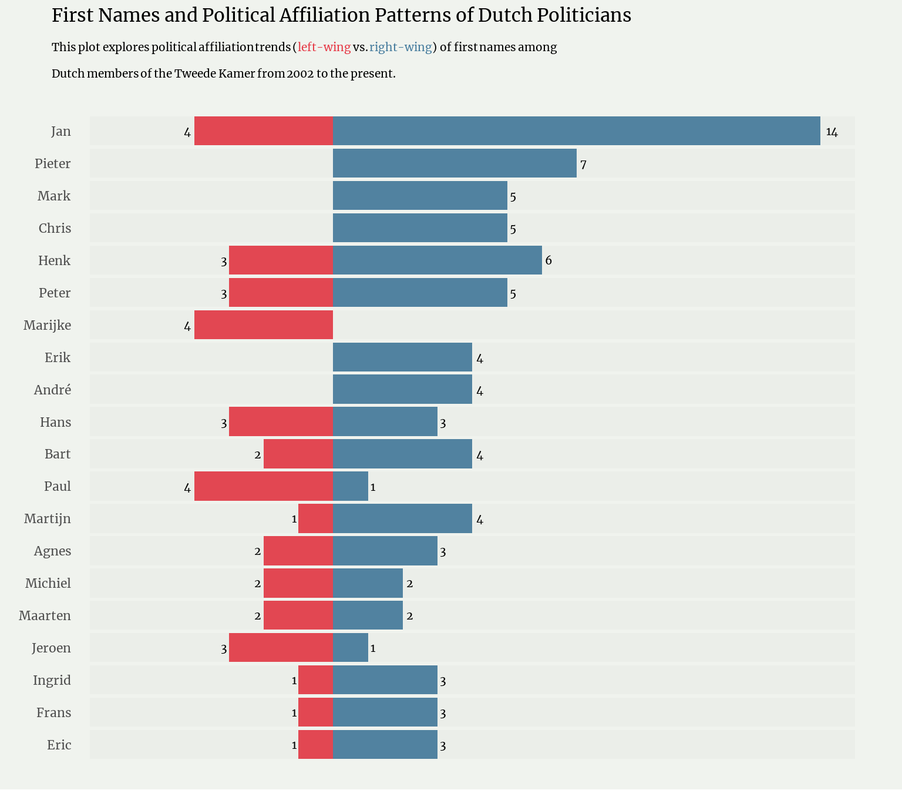

A short description of the post.
library(rvest)
library(dplyr)
library(stringr)
library(tidyverse)
library(sysfonts)
library(showtext)
library(ggtext)
# Download and register the Google Font you want (e.g., "Roboto")
font_name = 'Merriweather'
font_add_google(name = font_name, family = font_name)
# Enable showtext for ggplot2 to use custom fonts
showtext_auto()
dutch_political_parties <- data.frame(
FULL_Name = c(
"Socialist Party", "GroenLinks", "Labour Party", "Democrats 66",
"Party for the Animals", "Christian Union", "Volt Netherlands",
"People's Party for Freedom and Democracy", "Christian Democratic Appeal",
"Reformed Political Party", "Forum for Democracy", "Party for Freedom",
"JA21", "DENK", "50PLUS", "GL-PvdA", "New Social Contract",
"Group Van Haga", "50+/Baay", "Bontes/Van Klaveren",
"Group Krol/Van Kooten", "Kuzu/Öztürk", "Lid Van Kooten-Arissen",
"50+/Klein", "BIJ1", "Bontes", "Fractie-Den Haan",
"Houwers", "Klaver", "Lid Ephraim", "Lid Gündoğan",
"Lid Omtzigt", "Lid Van Haga", "Lid Krol", "Monasch",
"Van Vliet","BBB","VOLT","FVD",'Denk'
),
Party_Name = c(
"SP", "GL", "PvdA", "D66", "PvdD", "CU", "Volt",
"VVD", "CDA", "SGP", "FvD", "PVV", "JA21", "DENK",
"50PLUS", "GL-PvdA", "NSC", "Groep Van Haga",
"50+/Baay", "Bontes/Van Klaveren", "Groep Krol/Van Kooten",
"Kuzu/Öztürk", "Lid Van Kooten-Arissen", "50+/Klein",
"BIJ1", "Bontes", "Fractie-Den Haan", "Houwers",
"Klaver", "Lid Ephraim", "Lid Gündoğan", "Lid Omtzigt",
"Lid Van Haga", "Lid Krol", "Monasch", "Van Vliet","BBB","VOLT","FVD",'Denk'
),
Political_Leaning = c(
"Left", "Left", "Left", "Left",
"Left", "Right", "Left", "Right",
"Right", "Right", "Right", "Right",
"Right", "Left", "Left", "Left",
"Right", "Right", "Right", "Right",
"Left", "Right", "Right", "Left",
"Right", "Right", "Right", "Right",
"Right", "Left", "Right", "Right",
"Right", "Right", "Right", "Right","Right","Left","Right","Left"
),
stringsAsFactors = FALSE
)# URLs for the tables
urls <- c(
'https://en.wikipedia.org/wiki/List_of_members_of_the_House_of_Representatives_of_the_Netherlands,_2021%E2%80%932023',
'https://en.wikipedia.org/wiki/List_of_members_of_the_House_of_Representatives_of_the_Netherlands,_2023%E2%80%93present',
'https://en.wikipedia.org/wiki/List_of_members_of_the_House_of_Representatives_of_the_Netherlands,_2010%E2%80%932012',
'https://en.wikipedia.org/wiki/List_of_members_of_the_House_of_Representatives_of_the_Netherlands,_2012%E2%80%932017',
'https://en.wikipedia.org/wiki/List_of_members_of_the_House_of_Representatives_of_the_Netherlands,_2017%E2%80%932021',
'https://en.wikipedia.org/wiki/List_of_members_of_the_House_of_Representatives_of_the_Netherlands,_2002%E2%80%932003',
'https://en.wikipedia.org/wiki/List_of_members_of_the_House_of_Representatives_of_the_Netherlands,_2006%E2%80%932010'
)# Function to extract and clean the table from a given URL
get_table <- function(url) {
read_html(url) %>%
html_table(fill = TRUE) %>%
.[[1]] %>%
setNames(c("name", "icon", "Party_Name", "Assumed_office", "Left_office", "temp")) %>%
distinct(name, Party_Name)
}
# Get all dataframes by applying get_table function over the list of URLs
df_list <- lapply(urls, get_table)# Combine all dataframes, clean names, and remove duplicates
d_politicians <- bind_rows(df_list) %>%
distinct(name, .keep_all = TRUE) %>%
mutate(Party_Name = str_remove(Party_Name, "\\[.*\\]"))# Join with political party data and split the name into first name and surname
d_politicians_parties_leaning <- d_politicians %>%
inner_join(dutch_political_parties, by = "Party_Name") %>%
separate(name, into = c("first_name", "surname"), sep = " ", extra = "merge", fill = "right")
# Count and create signed values for right-leaning politicians
d_count <- d_politicians_parties_leaning %>%
count(first_name, Political_Leaning, sort = TRUE) %>%
mutate(n_signed = if_else(Political_Leaning == 'Right', n, n * -1))# Extract top 20 names by frequency
top_names <- d_politicians_parties_leaning %>%
count(first_name, sort = TRUE) %>%
select(first_name) %>%
head(20) %>%
pull()
# Filter the top 26 entries from the count data
top_26 <- d_count %>%
filter(first_name %in% top_names) #%>% filter(first_name == 'Paul')
#head(26)# Create a bar plot visualizing the first names and political affiliation patterns
ggplot(top_26) +
geom_bar(aes(x = reorder(first_name, n), y = n_signed, fill = Political_Leaning),
stat = "identity", show.legend = FALSE) +
geom_bar(stat = "identity", aes(x = reorder(first_name, n), y = 15), fill = 'grey', alpha = 0.1) +
geom_bar(stat = "identity", aes(x = reorder(first_name, n), y = -7), fill = 'grey', alpha = 0.1) +
geom_text(aes(x = reorder(first_name, n), y = n_signed, label = n),
hjust = ifelse(top_26$n_signed > 0, -0.5, 1.5), color = "black", family = font_name, size = 5) +
coord_flip() +
scale_fill_manual(values = c("#e63946", "#457b9d")) +
scale_y_continuous(limits = c(-7, 15)) +
labs(
title = "First Names and Political Affiliation Patterns of Dutch Politicians",
subtitle = "This plot explores political affiliation trends (<span style='color:#e63946;'>left-wing</span> vs. <span style='color:#457b9d;'>right-wing</span> ) of first names among <br> Dutch members of the Tweede Kamer from 2002 to the present.",
x = "",
y = ""
) +
theme_minimal(base_family = font_name) +
theme(
plot.title = element_text(hjust = 0, size = 23, family = font_name),
plot.subtitle = element_markdown(hjust = 0, size = 14, margin = margin(t = 5, b = 20), lineheight = 1.2),
panel.grid.minor = element_blank(),
panel.grid.major = element_blank(),
axis.text.x = element_blank(),
axis.text.y = element_text(size = 16, family = font_name, margin = margin(r = -15, l = -2)),
panel.background = element_rect(fill = "#F0F3EE", color = NA),
plot.background = element_rect(fill = "#F0F3EE", color = NA)
)
library(crosstalk)
#library(echarts4r)
library(magrittr)
#library(dplyr)
library(plotly)
# Create a SharedData object for crosstalk
shared_df <- SharedData$new(d_count)
d_count# A tibble: 495 × 4
first_name Political_Leaning n n_signed
<chr> <chr> <int> <dbl>
1 Jan Right 14 14
2 Pieter Right 7 7
3 Henk Right 6 6
4 Chris Right 5 5
5 Mark Right 5 5
6 Peter Right 5 5
7 André Right 4 4
8 Bart Right 4 4
9 Erik Right 4 4
10 Jan Left 4 -4
# ℹ 485 more rows# Create a crosstalk filter for 'Name'
filter_select("name", "Select Name:", shared_df, ~first_name)If you see mistakes or want to suggest changes, please create an issue on the source repository.
Text and figures are licensed under Creative Commons Attribution CC BY-SA 4.0. Source code is available at https://github.com/mcnakhaee, unless otherwise noted. The figures that have been reused from other sources don't fall under this license and can be recognized by a note in their caption: "Figure from ...".
For attribution, please cite this work as
Nakhaee (2024, Sept. 25). Muhammad Nakhaee: Names and Political Affiliation Patterns of Dutch Politicians. Retrieved from https://mcnakhaee.com/posts/2024-09-25-names-and-political-affiliation-patterns-of-dutch-politicians/
BibTeX citation
@misc{nakhaee2024names,
author = {Nakhaee, Muhammad Chenariyan},
title = {Muhammad Nakhaee: Names and Political Affiliation Patterns of Dutch Politicians},
url = {https://mcnakhaee.com/posts/2024-09-25-names-and-political-affiliation-patterns-of-dutch-politicians/},
year = {2024}
}